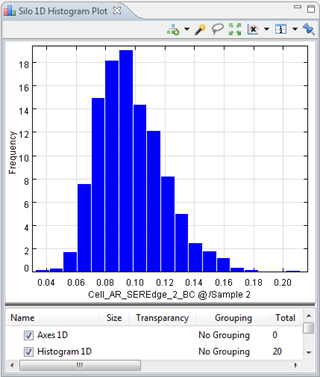

Silo 1D Histogram Plot
The 1D Histogram is a graphical representation of the distribution of the cell data.

Extra layers that can be added:
Density 1D layer
This will add another line curve.
Histogram 1D Layer
This will add a bar curve.